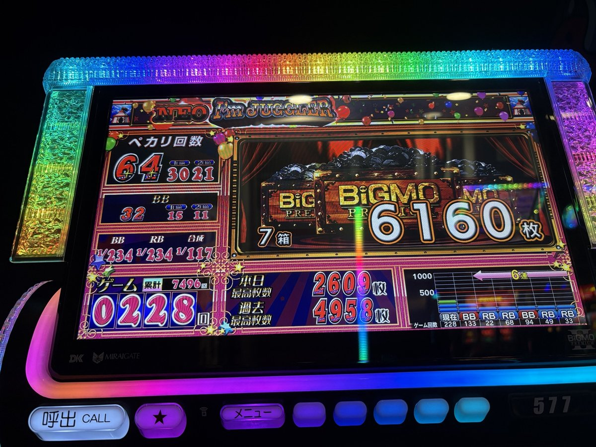
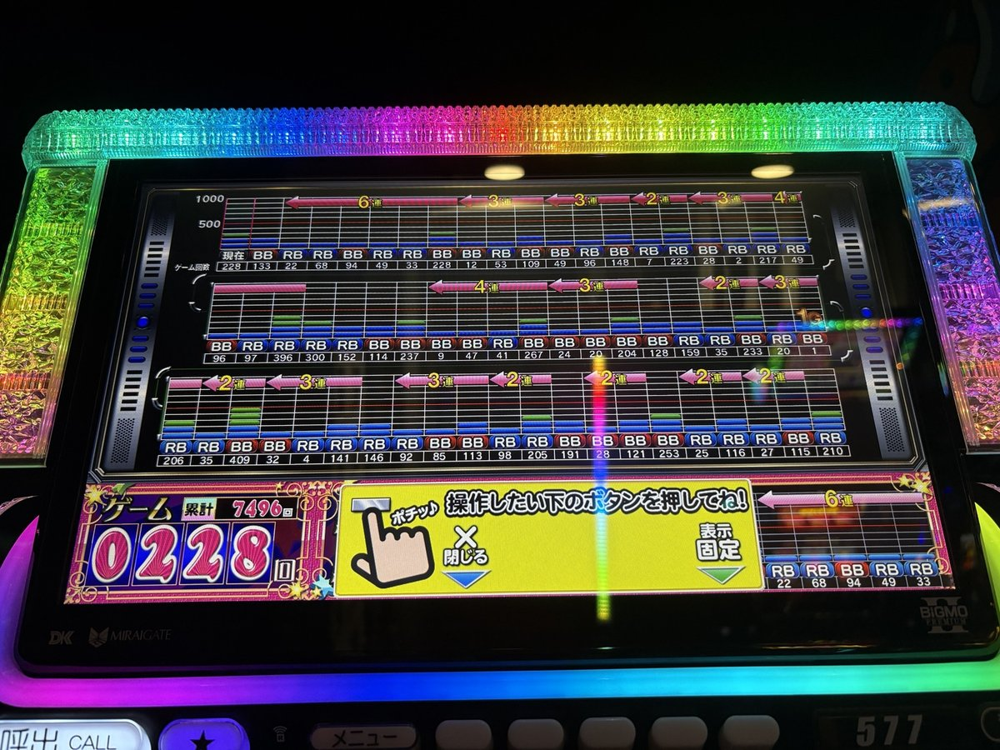

最後にアイムでも上乗せ
大当たり確率を見て期待して移動したところ、本人の言葉では「まさかの良い当たり」。最終回収は6,160枚で確定しています。本人が打った区間だけのゲーム数・BB・RB回数は記録から分離できないため、台全体の数値で代用しません。

タップして拡大 ↗機種別実戦記録
2026年11月23日のアイム実戦。軌跡から持ちメダル5,200枚を移し、最終6,160枚で＋960枚。台全体の履歴と本人の遊技区間を分けて振り返ります。
軌跡を終えた後はアイムジャグラーへ。本人が「大当たり確率が6付近」と感じた台で良い当たりに恵まれ、持ちメダルをさらに960枚増やして終了しました。設定6が確定した実戦ではありません。
| 項目 | 記録 |
|---|---|
| 移動時の持ちメダル | 5,200枚 |
| 最終回収（本人確認済み） | 6,160枚 |
| アイム区間の増減 | ＋960枚（6,160−5,200） |
5,200枚は前の機種から移した持ちメダルです。当日の追加投資に再計上しません。この機種区間の増減と、一日全体の収支は別の集計です。
大当たり確率を見て期待して移動したところ、本人の言葉では「まさかの良い当たり」。最終回収は6,160枚で確定しています。本人が打った区間だけのゲーム数・BB・RB回数は記録から分離できないため、台全体の数値で代用しません。

タップして拡大 ↗| 項目 | 記録 |
|---|---|
| 台全体の累計ゲーム数 | 7,496G |
| 台全体のBB／RB | 32回／32回 |
| 表示上のBB確率／RB確率 | 各1/234 |
| 表示上の合成確率 | 1/117 |
| 現在ゲーム数（写真の表示） | 228G |
| 本人区間のゲーム数・当選回数 | 未記録（台全体からの切り分け不可） |
「設定6付近」は本人が台を選んだ際の印象です。表示確率だけで設定を確定できるものではなく、この記録では機種の細かな型式や設定別確率との厳密な比較は行っていません。

タップして拡大 ↗移動の順序・最終回収・所感は本人申告。台全体の表示値は本人撮影のデータ表示機写真によります。筐体表記はNEO I’m JUGGLER。未確認の設定、細かな型式、本人区間の試行数は補完していません。